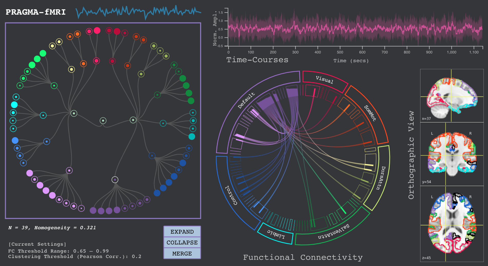

PRAGMA: Interactively Constructing Functional Brain Parcellations
PRAGMA is a visualization tool that allows domain experts to interactively parcellate a brain into functionally meaningful parcels. There are four main views in our design: a hierarchical clustering interface, a time-series plot, a functional connectivity chord diagram, and orthographic slice views of the current parcellation scheme. The user engages with these linked visuals to analyze the inter- and intra-parcel properties of the current scheme, as well as to make modifications to the scheme through the node-link representation of the brain.
News: PRAGMA has received Honorable Mention for Best Short Paper at the IEEE VIS 2020 conference!
A video preview of the tool and access to the open-source project will be available soon.